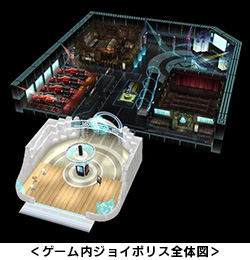
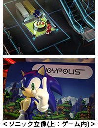
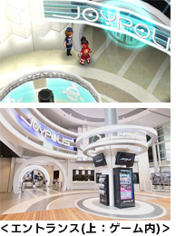

ソニック関連のコラボレーション情報を紹介！
2013.10.24
2014年春発売予定のニンテンドー3DS™専用ソフト『ヒーローバンク』のゲーム中に、国内最大級のテーマパーク“東京ジョイポリス”が登場決定！もちろんファンにはおなじみの「ソニック」の立像も登場！そしてさらに”ソニックサウンド”のコラボが決定！施設内で使用されるBGMは3Dアクションゲーム『ソニックアドベンチャー』のステージ「TWINKLE PARK」で使用された"Pleasure Castle ...Twinkle Park"の特別アレンジが流れます！
『ヒーローバンク』の世界でも「ソニック」の聖地!? 東京ジョイポリスをぜひ楽しんでください！
ゲーム中での東京ジョイポリスは、主人公の豪勝カイトが暮らす街、「勝堀町（がっぽりちょう）」にあるヒーローバトル(※1)の聖地「ジョイポリス」として登場します。ジョイポリスは、『ヒーローバンク』の世界でも現実世界と同様に、デジタル要素を盛り込んだステージやアトラクションなど、最新のエンタテインメントが楽しめる屋内型テーマパークとして多くの住人に愛されています。以下の通り、『ヒーローバンク』に登場する様々なコラボレーション情報をご紹介します。公式サイトでも詳しく紹介しているので、この機会にぜひチェックしてください！
(※1)データスーツヒーロー着を身にまとい戦う次世代のサイバースポーツのこと
『ヒーローバンク』に登場するジョイポリスは、実際の東京ジョイポリスのエントランスと同じ雰囲気でプレイヤーを待ち受けます。入り口を進むと中央にはソニックがお出迎え。実際の東京ジョイポリスにある等身大のソニックの立像をイメージして設置されています！

| 商品名 | ヒーローバンク |
|---|---|
| 対応機種 | ニンテンドー3DS |
| 発売日 | 2014年春 |
| 価格 | パッケージ版 5,550円（税込） ダウンロード版 4,900円（税込） |
| ジャンル | マネーバトルRPG |
| プレイ人数 | 1～2人 |
| CERO表記 | A区分（全年齢対象） |
| 著作権表記 | ©SEGA |
くわしい情報は『ヒーローバンク』公式サイト内の「マップ紹介 ジョイポリス」でぜひチェックしてください!→コチラ